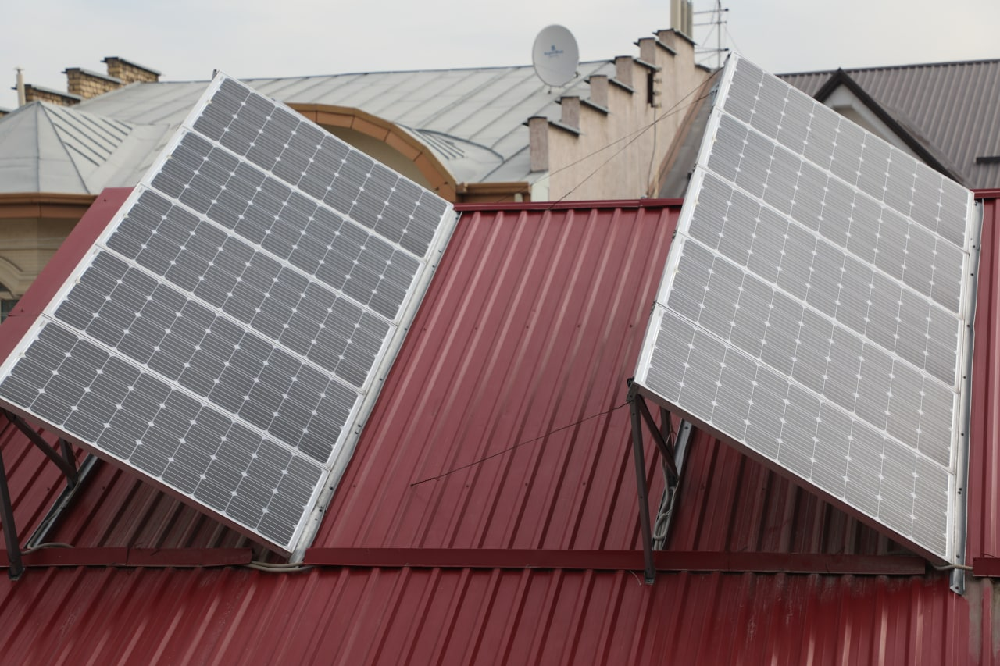

""Quyoshli xonadon" — aholi energiya sotmoqda"
Uyiga panel o'rnatgan aholi ortiqcha elektr energiyasini davlatga sotish orqali daromad topmoqda.
O‘zbekistonda 2026-yilga kelib “Quyoshli xonadon” dasturi nafaqat energiya tejash vositasi, balki aholi uchun barqaror daromad manbaiga aylandi. Bugungi kunda xonadoniga quyosh panellari o‘rnatgan fuqarolar o‘z ehtiyojidan ortiqcha ishlab chiqarilgan elektr energiyasini davlatga sotish orqali sezilarli mablag‘ ishlab topmoqdalar. 2025-yil yakunlariga ko‘ra, respublika bo‘yicha 45 mingdan ortiq fuqaroga jami 209 milliard so‘mdan ziyod subsidiya to‘lab berilgani bu tizimning ko‘lamini ko‘rsatadi. Eng ko‘p daromad ko‘rayotgan hududlar qatorida Xorazm viloyati (55 mlrd so‘m), Qoraqalpog‘iston Respublikasi (29 mlrd so‘m) va Buxoro viloyati (25 mlrd so‘m) yetakchilik qilmoqda.
Dastur doirasida aholidan sotib olinadigan elektr energiyasining har bir kilovatt-soati uchun davlat budjetidan 1000 so‘m miqdorida subsidiya to‘lanadi. Bu to‘lovlar soliqqa tortilmaydi va fuqaroning umumiy daromadi sifatida hisobga olinmaydi, ya’ni bu sof foyda hisoblanadi. 2026-yildan boshlab energetika sohasidagi islohotlarning yangi bosqichi sifatida elektr energiyasi tariflari kamida uch yil muddatga o‘zgarmas qilib belgilanmoqda, bu esa aholi uchun o‘z investitsiyalarini rejalashtirishda katta ishonch bag‘ishlaydi. Hozirda jami generatsiya quvvatlarining qariyb 31 foizi (8 ming megavatt) quyosh, shamol va gidroenergetika hissasiga to‘g‘ri kelmoqda.

Ushbu tizimdan foydalanish va daromadni olish jarayoni to‘liq raqamlashtirilgan. Fuqarolar o‘rnatilgan panellar orqali tarmoqqa uzatilgan energiya miqdorini va unga hisoblangan pullarni “Soliq” mobil ilovasi orqali kuzatib boradilar. Ilovadagi “Cashback va imtiyozlar” bo‘limi orqali yig‘ilgan subsidiyani istalgan vaqtda bank kartasiga o‘tkazib olish imkoniyati mavjud. Shuningdek, 2026-yilda yangi qurilayotgan ko‘p qavatli uylarning tomlariga kamida 50 foiz maydonida quyosh panellari o‘rnatish majburiyati ham o‘z kuchida qolmoqda, bu esa shaharlarda ham “yashil energiya” sotuvchilari ko‘payishiga xizmat qiladi. Davlat tomonidan berilayotgan imtiyozlar, jumladan, panellar sotib olish uchun imtiyozli kreditlar va uskunalar qiymatining bir qismini qoplab berish (20–40% gacha) mexanizmlari aholi uchun quyosh energetikasini eng jozibador biznes yo‘nalishlaridan biriga aylantirdi.